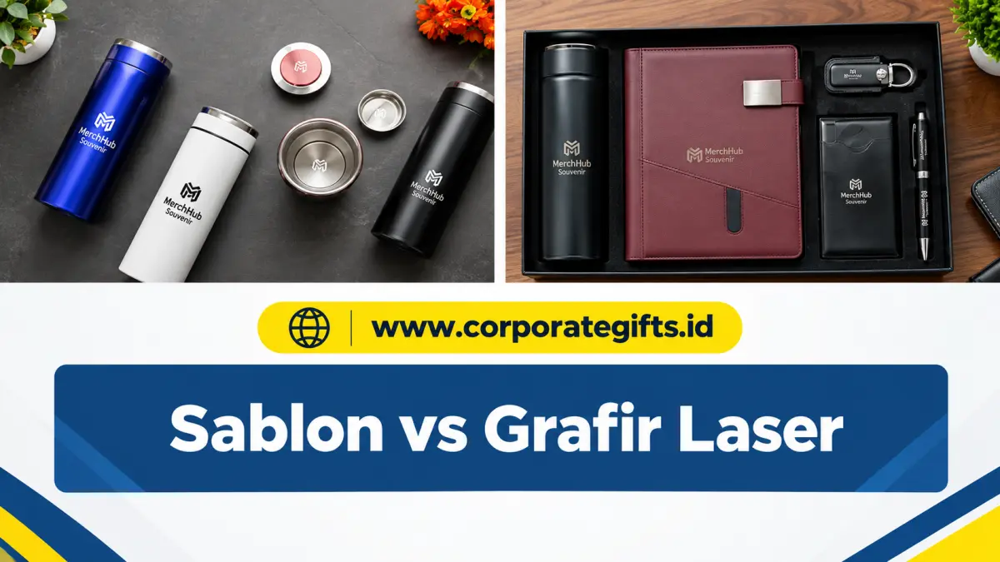

Corporate Gifts ID - Sablon menggunakan tinta yang dicetak di permukaan produk sehingga bisa menghasilkan logo full color, sementara grafir laser mengikis permukaan material sehingga hasilnya permanen namun tanpa warna. Secara singkat, sablon lebih cocok untuk kebutuhan warna dan anggaran terbatas, sedangkan grafir laser lebih cocok untuk kesan premium dan daya tahan jangka panjang. Pilihan terbaik untuk souvenir kantor Anda bergantung pada tiga faktor utama: material produk, pesan brand yang ingin disampaikan, dan anggaran yang tersedia.
Anda mungkin sudah berhasil memilih item cinderamata yang pas untuk acara korporat. Namun, ada satu keputusan krusial lagi yang akan menentukan impresi akhir saat hadiah dipegang oleh penerima: teknik aplikasi logo. Dua metode yang paling sering dipertimbangkan tim pengadaan adalah sablon (printing) dan grafir laser (engraving).
Keduanya mampu menghasilkan representasi merek yang apik, namun memiliki perbedaan mendasar dalam hal alur proses, kalkulasi biaya, ketahanan fisik, serta citra prestise yang dipancarkan. Menentukan teknik yang keliru berisiko membuat souvenir mewah terlihat kurang eksklusif, atau sebaliknya, menyerap anggaran berlebih di luar rencana pengadaan souvenir kantor Anda.
Poin Kunci Sablon vs Grafir Laser:
- Metode Aplikasi: Sablon mentransfer lapisan tinta (ink layer), sedangkan grafir laser mengikis permukaan material secara presisi.
- Fleksibilitas Warna: Sablon unggul dalam visualisasi logo multi-warna (full-color), sementara grafir laser tampil monokrom elegan mengikuti warna dasar material.
- Daya Tahan & Keawetan: Hasil grafir laser bersifat permanen seumur hidup tanpa risiko terkelupas, sedangkan sablon memerlukan perawatan agar tidak mudah tergores.
- Struktur Biaya: Sablon lebih ekonomis untuk volume pesanan besar di atas 100 pcs, sedangkan grafir laser stabil untuk skala kecil tanpa biaya setup screen.
- Kesesuaian Material: Sablon cocok untuk kain, plastik, dan payung; grafir laser paling ideal untuk logam (stainless steel), kayu, akrilik, dan kulit sintetis.
Memahami Teknik Sablon (Printing) untuk Souvenir
Secara sederhana, sablon adalah proses mentransfer tinta khusus ke atas permukaan media. Dalam industri cinderamata modern, ranah printing mencakup teknik sablon manual (screen printing), pad printing untuk kontur permukaan melengkung, hingga teknologi mutakhir seperti Cetak UV (UV Flatbed Printing) yang mengeringkan tinta seketika menggunakan paparan sinar ultraviolet.
Kelebihan Teknik Sablon
- Akurasi Warna Pantone Sempurna: Ini adalah keunggulan mutlak. Sablon mampu mewujudkan logo dengan banyak paduan warna, gradasi halus, hingga cetak foto full-color beresolusi tinggi.
- Sangat Hemat untuk Skala Besar: Pada volume pemesanan ratusan hingga ribuan unit, biaya per buah menjadi sangat terjangkau karena plat film hanya dibuat satu kali di awal.
- Fleksibilitas Media Ekstensif: Dapat diaplikasikan pada hampir seluruh jenis material, mulai dari kain katun (tote bag, kaos), kanvas, plastik polimer, kaca, hingga mug keramik.
Kekurangan Teknik Sablon
- Ketahanan Fisik Terbatas: Seiring intensitas pemakaian, gesekan kasar, atau pencucian berulang, lapisan tinta sablon konvensional rentan mengalami retak, mengelupas, atau memudar.
- Kesan Permukaan Tambahan: Dibandingkan grafir, sablon terkadang terasa seperti stiker atau lapisan tempelan luar yang tidak menyatu dengan struktur bawaan benda.
Memahami Teknik Grafir Laser (Laser Engraving)
Grafir laser sama sekali tidak melibatkan media tinta atau cairan kimia. Proses mutakhir ini mengandalkan pancaran sinar laser berdensitas energi tinggi (seperti serat fiber atau laser CO2) untuk mengikis atau menguapkan lapisan mikron terluar dari permukaan material, membentuk siluet desain yang tertanam permanen.

Detail presisi mesin grafir laser saat mengukir logo perusahaan pada permukaan logam dan kayu.
Kelebihan Teknik Grafir Laser
- Permanen Seumur Hidup: Karena desain terbentuk dari pengikisan fisik, hasil grafir menyatu secara permanen dan tidak akan pernah luntur, pudar, atau terkelupas oleh gesekan maupun air.
- Presisi Mikro yang Tajam: Laser komputerisasi mampu mengukir garis berukuran rambut dan font tipis dengan detail yang sangat rapi dan konsisten.
- Nuansa Mewah dan Prestisius: Memberikan tekstur emboss cekung halus yang bersih, elegan, dan seketika menaikkan nilai estetika souvenir di mata mitra VIP.
Kekurangan Teknik Grafir Laser
- Monokrom Tanpa Warna Tinta: Grafir tidak bisa memunculkan warna merah, biru, atau hijau. Warna yang timbul adalah rona dasar material, seperti perak pada stainless steel hitam atau coklat bakar pada kayu.
- Waktu Pengerjaan per Unit: Setiap produk harus dipindai sinar laser satu per satu, sehingga biaya produksi massal tetap proporsional mengikuti durasi jalan mesin.
- Keterbatasan Substrat: Hanya efektif untuk media yang tahan paparan panas tinggi seperti logam, kayu solid, kulit sintetis tebal, kaca, dan akrilik. Tidak dapat diterapkan pada kain tipis atau plastik rapuh.
Tabel Perbandingan Cepat: Sablon vs Grafir Laser
Untuk memudahkan evaluasi spesifikasi dalam proposal pengadaan barang korporat, berikut rangkuman komparasi teknis kedua metode:
| Parameter Evaluasi | Teknik Sablon / UV Printing | Teknik Grafir Laser (Engraving) |
|---|---|---|
| Keawetan Hasil | Sedang hingga tinggi (tergantung tipe tinta UV) | Maksimal (permanen seumur produk) |
| Pilihan Warna | Sangat kaya (multi-warna, gradasi, full color) | Monokrom (mengikuti substrat asli bahan) |
| Tingkat Detail | Baik untuk visual grafis visual padat | Sangat tinggi untuk garis mikro dan tipografi |
| Kesan Estetika | Dinamis, ceria, dan tegas menyala | Klasik, mewah, eksklusif, dan profesional |
| Biaya Skala Besar (>100 pcs) | Sangat ekonomis per unit produk | Biaya tetap stabil sesuai waktu mesin |
| Biaya Setup Awal | Memerlukan screen film atau kalibrasi file UV | Hampir tanpa biaya setup cetak |
| Kesesuaian Material | Kain, kanvas, plastik, keramik, payung | Stainless steel, kuningan, kayu, akrilik, kulit |
Panduan Memilih: Kapan Menggunakan Sablon vs Grafir Laser?
Kedua teknik memiliki keunggulan masing-masing. Kuncinya adalah menyelaraskan karakter branding perusahaan dengan profil penerima hadiah:
Kapan Sebaiknya Menggunakan Sablon?
- Pedoman identitas brand korporat (brand guideline) Anda mewajibkan kesesuaian kode warna pantone tertentu yang tidak boleh diubah.
- Anda memproduksi souvenir dalam jumlah massal untuk kegiatan pameran, fun run, atau seminar dengan anggaran per kepala yang terukur.
- Material media yang dipilih merupakan produk fleksibel seperti payung lipat, tas kanvas blacu, lanyard kartu identitas, atau kaos polo gathering.
Kapan Sebaiknya Memilih Grafir Laser?
- Anda ingin menonjolkan citra prestisius, kokoh, dan tahan lama yang mencerminkan stabilitas bisnis perusahaan.
- Paket souvenir ditujukan untuk pemangku kepentingan strategis, tamu VVIP kenegaraan, partner bisnis utama, atau jajaran dewan direksi.
- Produk yang dipesan berbahan dasar logam atau kayu solid, seperti tumbler stainless steel custom, pulpen metal eksekutif, atau plakat penghargaan.
Pertanyaan Teknis Seputar Sablon dan Grafir Laser (FAQ)
Kesimpulan: Tentukan Teknik Branding Sesuai Tujuan Perusahaan
Tidak ada jawaban mutlak mengenai metode mana yang paling superior. Pilihan terbaik bertumpu pada tiga variabel inti: karakteristik material produk, pesan nilai brand yang hendak dikomunikasikan, serta alokasi anggaran yang tersedia.
Jika Anda memprioritaskan kekayaan warna dan efisiensi volume besar, sablon atau Cetak UV adalah pilihan tepat. Namun, jika Anda mengedepankan ketahanan seumur hidup serta kesan eksekutif yang prestisius, grafir laser menjadi standar emas yang tak tertandingi. Keputusan teknik kustomisasi yang matang menjadi pilar penting bagi kesuksesan pengadaan souvenir kantor di Surabaya dan seluruh penjuru Indonesia.